Free
computer Tutorials
|
Free
computer Tutorials
|
|
 home home |
|
|||||
Microsoft Word 2007 to 2010Add a Contents Page to your BookletWe'll insert a contents page on page 2 of our document. So click onto
page 2. Type the word "Contents" at the top, and centre it.
Change the font and font size. Again, hit the enter key a few times
to give yourself some space. Your page will then look like this: 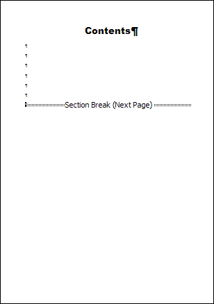 In the image above, we've hit the Enter key 8 times.
With your cursor flashing just before the Section Break, at the start of the line, click on the References tab at the top of Microsoft Word. On the References tab locate the Table of Contents panel. Click the Table of Contents item to see the following menu: 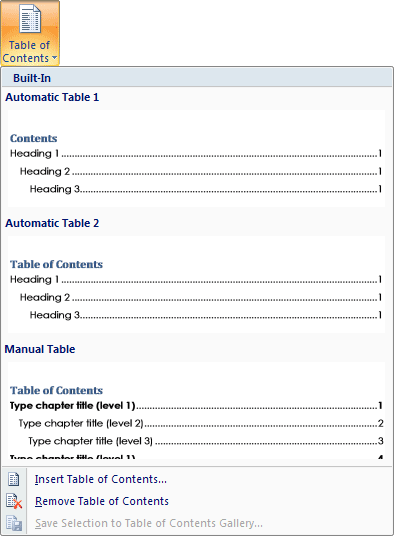 As you can see, there are a few built-in styles you can use. But click the menu item at the bottom that says "Insert Table of Contents". The following dialogue box should then appear: 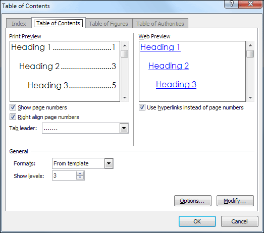 The Heading 1, Heading 2 and Heading 3 refer to in-built styles. We didn't use any of these styles, but created our own. That means we need click the Options button at the bottom. When you click the Options button, you'll see this dialogue box: 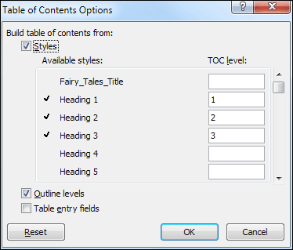 Notice there is an area called TOC level. TOC stands for Table of Contents, and the levels are for different sub headings. We don't have any sub headings, just the story titles. But the default settings are for Heading 1 to be TOC level 1, Heading 2 to be TOC level 2, and Heading 3 to be TOC level 3. We need to delete these numbers. So click inside the text box with the 1 in it. Delete the 1 by hitting
the backspace key on your keyboard. Do the same for the 2 and the 3.
Now click inside of the Fairy_Tales_Title text box, which is our style.
Type the number 1 and your dialogue box will look like this: 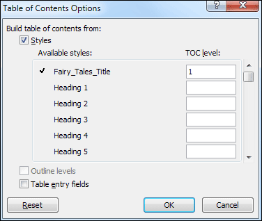 If we did have sub heading, we could have set them all to the Heading 2 Style. We would have then typed a 2 in the Heading 2 text box. This would get you a table of contents in this style: Main Heading Level 1 But click OK when your dialogue box looks like ours above. You will be returned to the Table of Contents dialogue box: 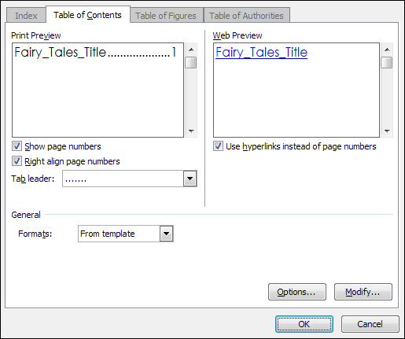 There are a few areas to take note of here. "Show page numbers" means the page that the story starts on. These are shown on the right hand side because we have ticked the box below it. A Tab leader is the area between the heading and the page number. The default is dots. You can change this from the Tab leader dropdown box. The Formats dropdown box contains built-in content styles. Click
the arrow to see the following: 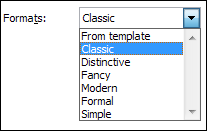 We have selected Classic. The Print Preview at the top will then show this: 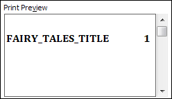 Click OK after selecting Classic and the dialogue box will disappear. Your contents page will then look like this: 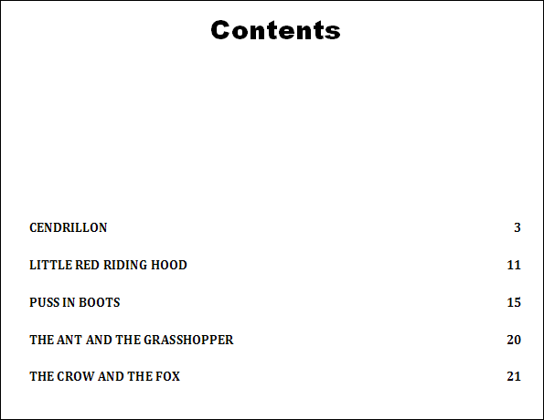 If you wanted to jump to, say, the Puss in Boots story, hold down the CTRL key on your keyboard. Keep it held down and click with your left mouse button on that story title. You will jump to page 15 in your document. To get back either scroll up, or hold down the CTRL and Home key combination. Another way to jump to different parts of your document is from the
Home > Editing panel. Click the Find option, and then
the Go To item: 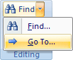 You'll then see the following dialogue box: 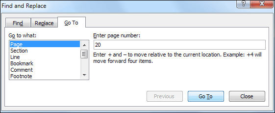 (A quick way to bring up this dialogue box is by pressing the CTRL key on your keyboard then the letter G.) Type a page number in the text box and click the Go To button. (The button will say Next before you type anything into the text box.) Or you could select the Section item on the list and type a section number text box.
But let's move on. In the next lesson you'll see why we set up all
those sections breaks. Working with Sections in Word 2007/2010 --> <--Back to the Word Contents Page View all our Home Study Computer Courses
|
||||||
|